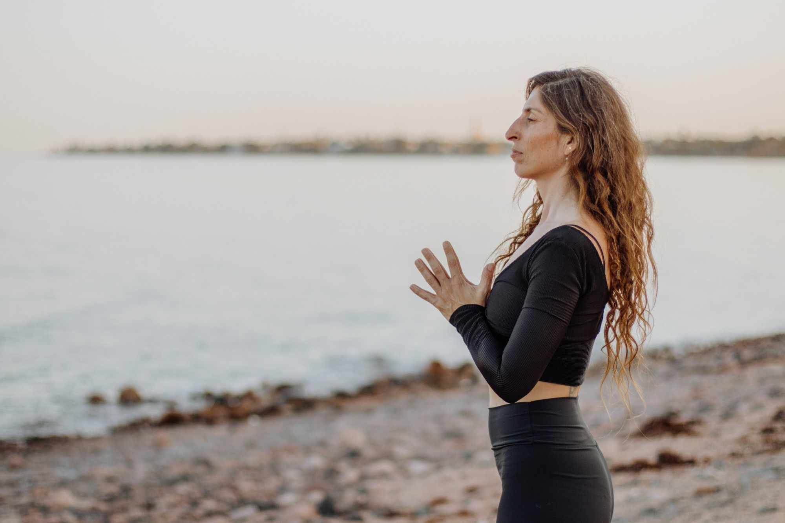

ריטריט יום · שדות ים
שבת אחת לעצמך
לפעמים כל מה שצריך זה קצת זמן לעצמנו, מקום יפה, ים קרוב ומפגש אנושי טוב.
ניפגש לנו בשבת בשדות ים, במרחב יפהפה, כמה דקות הליכה מהים. יום קצת אחר מהיומיום, עם תכנים מעניינים, תנועה, אוכל טוב ומפגש עם אנשים טובים, באווירה נעימה ועם מקום גם לתוכן וגם לביחד.
אחרי לא מעט ריטריטים שהעברתי בשדות ים, אני יודעת כמה כוח יש למפגשים האלה. כמה שעות ביחד, במקום הנכון ועם האנשים הנכונים, יכולות להשאיר אותנו עם לב קצת יותר רחב ועם משהו טוב לקחת איתנו הלאה.
מה מחכה לנו?
- תרגול יוגה
- מדיטציה ונשימה
- סדנת כתיבה
- סדנת תאי מסאג׳
- אוכל מפנק לאורך היום
- מעגלי תוכן
- וזמן פשוט להיות
לו״ז
- 9:45הגעה, קפה ונשנושים
- 10:00מעגל פתיחה
- 10:30מדיטציה, פראניאמה ויוגה
- 12:30הפסקה וארוחה מפנקת
- 13:00סדנת כתיבה ותאי מסאג׳
- 15:00סיום היום
למי זה מתאים?
למי שמרגישים שהגיע הזמן לקחת רגע לעצמם, להתרחק קצת מהשגרה ולמלא מצברים. למי שאוהבים ים, תנועה, כתיבה ומפגש עם אנשים חדשים, וגם למי שפשוט רוצים יום נעים באווירה טובה, בלי צורך לתכנן או לארגן שום דבר.
פרטים טכניים
380 ש״ח ליום המלא
העלות כוללת:
- כל התכנים והסדנאות
- אוכל לאורך היום (טבעוני וצמחוני)
קצת ים, קצת תנועה, אנשים טובים ואוכל מפנק, ונחזור הביתה קצת יותר קלילים, עם חיוך גדול ובוסט ללב, לראש ולנשמה.
מחכה לכם, יפעת
שאלות נפוצות
לאיזה גילאים הריטריט מתאים?
ברוב הקבוצות שלי הגילאים נעים סביב 20-60 ותמיד יש גם כאלה שקצת מעל או קצת מתחת. ודווקא השוני הזה בין האנשים הוא חלק ממה שהופך את הריטריט לכל כך מיוחד. בסוף מגלים שהגיל הוא ממש לא מה שחשוב - החיבור פשוט קורה.
צריך ניסיון קודם בריטריטים או ביוגה?
לא. לא צריך ניסיון מיוחד ולא צריך להגיע עם שום ידע מוקדם. רק רצון לבוא, ליהנות ולתת שבת לעצמכם ❤️
אפשר להגיע לבד?
ברור! ואפילו רוב המשתתפים מגיעים לבד. לאורך השנים חלק גדול מהנרשמים מגיעים בלי להכיר אף אחד, ובמהלך הריטריט נוצרת קבוצה מאוד מהר. אז אם בא לכם לבוא - אל תחכו שמישהו יצטרף אליכם.
ואם אני עדיין לא בטוח/ה ורוצה קודם לדבר?
אין בעיה. כתבו לי כאן בווטסאפ ונדבר.